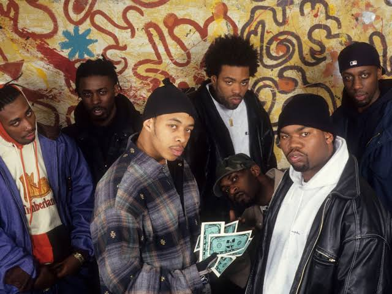
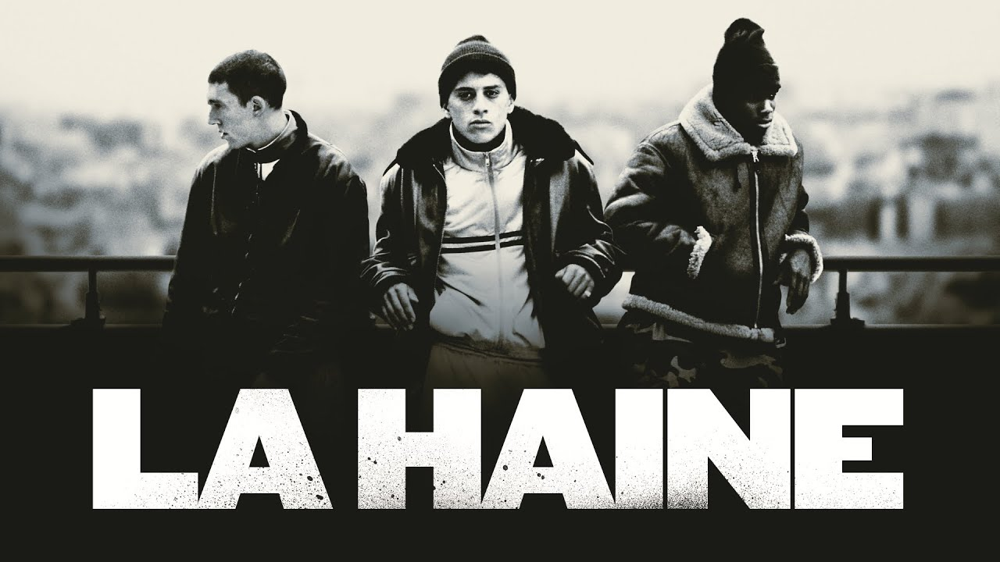

Ik ben Floris Durnez en ik volg Toegepaste Informatica, via afstandsonderwijs, aan de Vives Hogeschool.
Ik ben gehuwd met een Bulgaarse, Kalina, en we hebben twee kinderen Emma en Kobe.
De Wu-Tang Clan is een Amerikaanse hiphopformatie uit Staten Island, New York. Deze Eastcoast-formatie wordt gerekend tot de golden era hiphop en bestaat uit negen leden: Method Man (Johnny Blaze, Hot Nickels), RZA (The Abbot), GZA (The Genius), Raekwon (The Chef), Inspectah Deck (Rebel INS), U-God (Golden Arms), Masta Killa (Noodles), Ghostface Killah (Tony Starks, Iron Man, Ghostdini, Pretty Toney) en Cappadonna (Cappachino). Ol' Dirty Bastard (A Son Unique, Osirus, Dirt McGirt) overleed in 2004. Wu-Tang heeft ook nog twee leden die niet aan zang doen: Mathematics en DJ Symphony.
Website Wu-Tang Clan
La Haine (in het Nederlands ook uitgebracht als: 'De Haat') is een Franse film uit 1995 onder regie van Mathieu Kassovitz. De film is gedraaid in zwart-wit en is geïnspireerd door de affaire Makomé M'Bowolé uit 1993. De opnamen vonden plaats in Chanteloup-les-Vignes.
Website imdb over La haine.